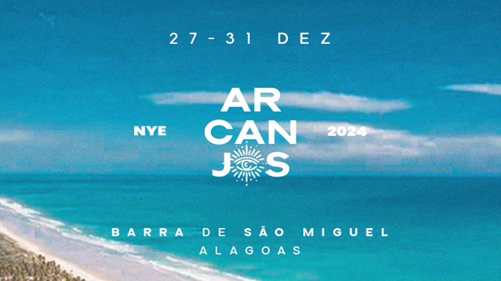

DESCUBRA O QUE É SER ARCANJOS

Réveillon Arcanjos se consagrou pela união de um público “good vibes”em um local extremamente paradisíaco, a Barra de São Miguel.
Localizada há menos de 40 minutos do aeroporto da capital de Alagoas: Maceió.
A festa acontecerá na Barra de São Miguel-Alagoas. O evento possui uma linha musical baseada, principalmente, no eletrônico, axé e funk.Com a promessa de diversificar a experiência, a semana do Arcanjos percorre diversos estilos musicais,
o que empolga diversos artistas nacionais e internacionais que já passaram por nosso palco, como Jan Blomqvist,Bob Moses, Bakermat, WhoMadeWho, Banda Eva, Bonde do Tigrão, Buchecha, Matheus Fernandes, Bruninho e Davi, entre outros.
27 à 31 de dezembro de 2023LINE UP
Apache, Benner, Blond:ish, Bob Moses (Club Set) Dennis DJ, Jessica Brankka, Lucas Beat, Maz, Mochakk, Nattan, Pontifexx, Antônio Oliva, Bejota, Enjoys, Hot-Q, Lipe Napoli, Pedro Perdiz, Rafa Rios, Ricardo Rezende, Vitor BuenoPROGRAMAÇÃO
27/12 23h00 | 28/12 23h00 | 29/12 23h00 | 30/12 16h00 | 31/12 22h00SERVIÇO
Open Bar todos os dias com Vodka, Whisky, Gin, Cerveja, Energético, Refrigerante e Águafood no dia 31 com buffet na virada do ano e café da manhã
Vem ser ARCANJOS!